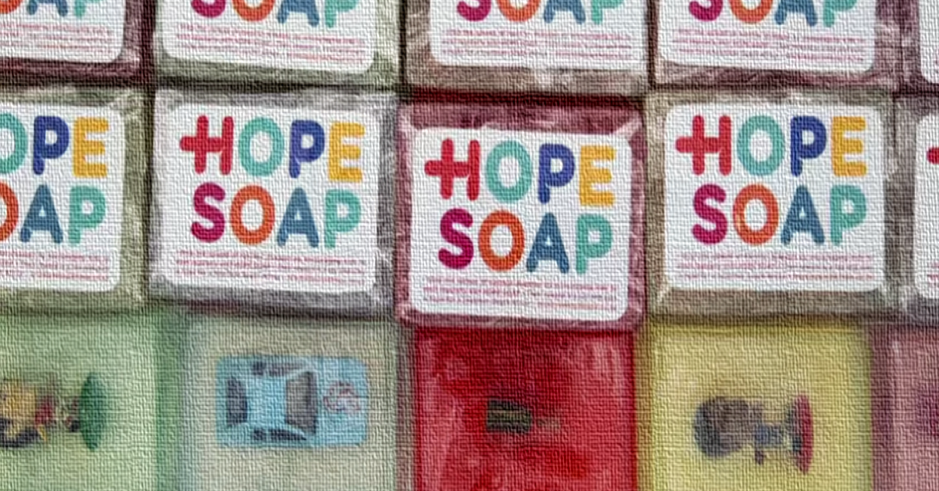

Testimonials
Celebratory remarks and testimonials from partners, staff members, and alumni from the past ten years.
Research Staff and Partners
Brendan Maughan-Brown
Research Advisor, J-PAL Africa
Chief Research Officer, Southern Africa Labour and Development Research Unit
"In 2014, Professor Justine Burns and I came across an exciting hygiene intervention – Hope Soap, a colourful, translucent bar of soap with a toy embedded in its centre – that had promise of improving handwashing and health outcomes among children. We wanted to conduct a pilot impact evaluation of Hope Soap within a year, but did not have access to short-term funding and did not have the capacity ourselves to drive all aspects of the research design and implementation. J-PAL Africa provided the solution to both these problems. We were awarded seed funding from the J-PAL Africa Project Incubation Fund, and J-PAL Africa provided incredible study design and in-field support. By the end of 2014, we successfully completed our study with 287 young children in a resource-poor community in Cape Town (see article for details). I am uncertain whether our study would have gotten off the ground without support from J-PAL Africa, but I have no doubt that the incredibly high quality of our research data was thanks to the J-PAL Africa team. Furthermore, the project was fun as the team was a delight to work with. It is wonderful to be part of the J-PAL Africa team now and I look forward to conducting many more RCTs with J-PAL Africa."
Brendan Maughan-Brown is a Health Economist with over 15 years of experience conducting public health research in South Africa. He currently serves as the Research Advisor at J-PAL Africa and as a Chief Research Officer at the Southern Africa Labour and Development Research Unit, University of Cape Town.
Remarks from J-PAL Africa's Launch Event in 2011
"We wish the Jameel Poverty Action Lab every success, not merely as a gesture of good will but because its output is sorely needed for evidence-based policy making. We hope that you demonstrate the advantages of good quality research and its impact on policy making across our country and you use this base to strengthen the capacity of researchers in South Africa and Africa."
Dr Max Price
Former Vice Chancellor of UCT
"We are privileged to have been given the opportunity to host the African node of J-PAL because it speaks directly to two of our strategic goals – to increase the quality and impact of research as well as to establish UCT as a hub of academic activity between Africa and the rest of the world."